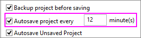

FAQ-466 Gibt es eine automatische Speicherfunktion für Projekte?
AutoSave-Project
Letztes Update: 03.03.2021
Wenn Sie einen Programmabsturz oder einen Stromausfall erleben, können Sie den größten Teil Ihrer Arbeit möglicherweise wiederherstellen, wenn die Option Automatisches Speichern des Projekts alle x Minute(n) in Ihrem Origin-Dialog Optionen aktiviert ist:
- Wählen Sie Einstellungen: Optionen und wechseln Sie zur Registerkarte Öffnen/Schließen.
- Aktivieren Sie das Kontrollkästchen Automatisches Speichern des Projekts alle x Minute(n). Passen Sie die Minute(n) je nach Bedarf an (der Standardwert sind 12 Minuten).
-
- 
 |
Diese FAQ konzentriert sich auf das automatische Speichern der Projektdateien, was sehr nützlich ist zum Wiederherstellen nach Abstürzen oder Stromausfällen. Wenn Sie gespeichert und Origin normal geschlossen haben, aber später merken, dass Ihre gespeicherte Projektdatei beschädigt ist, lesen Sie bitte FAQ-464: Wie kann ich eine beschädigte Origin-Datei wiederherstellen?
|
Origin-Version = 2021b und höher
- Wenn Automatisch alle x Minute(n) speichern aktiviert ist (Standard), wird der aktuelle Inhalt des Projekts regelmäßig unter <Systemlaufwerk>\Users\user\Documents\OriginLab\Autosave\ (Standardpfad) gespeichert.
- Wenn ein benanntes Projekt modifiziert, gespeichert und normal geschlossen wird oder wenn ein Projekt ohne Titel (UNTITLED) benannt, gespeichert und normal geschlossen wird, wird nichts unter \Autosave gespeichert.
- Während der Sitzung wird ein Projekt mit Namen, das geöffnet und modifiziert wird, unter \Autosave als projectFileName-xxxxxx.opju oder .opj gespeichert. Falls das Projekt geschlossen wird, ohne dass die Änderungen gespeichert wurden, wird das Projekt mit dem Namen Last-AutoSave.opju oder .opj versehen und das vorherige Last-AutoSave.opju/opj überschrieben. Wenn das Programm plötzlich verlassen wird, sollte die letzte Version von projectFileName-xxxxxx.opju oder .opj bewahrt werden.
- Während der Sitzung werden Projekte ohne Namen (Untitled) im Ordner \Autosave als UNTITLED-xxxxxx.opju oder .opj aufgeführt. Falls das Projekt ohne Namen geschlossen wird, ohne dass es als eine benannte Datei gespeichert wurde, wird das Projekt mit dem Namen Last-AutoSave.opju oder .opj versehen und das vorherige Last-AutoSave.opju/opj überschrieben. Wenn das Programm plötzlich verlassen wird, sollte die letzte Version von UNTITLED-xxxxxx.opju oder .opj bewahrt werden.
- Die automatische Speicherung ist per Standard für "UNTITLED"-Projekte aktiviert. Um die automatische Speicherung von UNTITLED-Projekten zu deaktivieren, setzen Sie @DASU=1.
- Sie können den Ordner \Autosave öffnen, indem Sie (a) Hilfe: Ordner öffnen: Autosave wählen, (b) den Ordner im Pfad \Autosave, der auf der Registerkarte Einstellungen: Optionen > Registerkarte Systempfad aufgeführt wird, öffnen oder (c) zu <Systemlaufwerk>\Users\user\Documents\OriginLab\Autosave (Standardpfad) navigieren.
Origin-Version = 2018b bis 2021
- Wenn Sie das Kontrollkästchen Automatisches Speichern des Projekts alle x Minute(n) aktiviert haben, navigieren Sie zum Ordner \Autosave. Ihr Projekt sollte sich dort befinden, aufgeführt als projectFileName-xxxxxx.opju oder .opj.
- Die automatische Speicherung ist per Standard für "UNTITLED"-Projekte aktiviert. Projekte ohne Namen werden im Ordner \Autosave als Untitled-xxxxxx.opju oder .opj gezeigt.
- Um die automatische Speicherung von UNTITLED-Projekten zu deaktivieren, setzen Sie @DASU=1.
- Sie können den Ordner \Autosave öffnen, indem Sie (a) Hilfe: Ordner öffnen: Autosave wählen, (b) den Ordner im Pfad \Autosave, der auf der Registerkarte Einstellungen: Optionen > Registerkarte Systempfad aufgeführt wird, öffnen oder (c) zu <Systemlaufwerk>\Users\user\Documents\OriginLab\Autosave (Standardpfad) navigieren.
Origin-Version = 2018 und älter
- Ihr Projekt muss einmal gespeichert worden sein (d. h. einen Namen erhalten haben), damit die automatische Speicherung funktioniert. Wenn Sie ein neues Objekt-Projekt öffnen, das noch nicht auf der Festplatte gespeichert wurde (und daher auch keinen gültigen Pfad und Dateinamen besitzt), kann der Prozess zum automatischen Speichern nicht gestartet werden.
- Der automatische Speicherungsprozess speichert eine Kopie des aktuellen Projekts im Unterordner \Autosave (2017 und älter, der sich im gleichen Ordner wie Ihr Anwenderdateiordner befindet. Benutzer von 2018 finden \Autosave unter C:\Users\user\Documents\OriginLab).
- Der Projektname wird an eine Identifikationsnummer (z. B. "MyFileName-197238406.opj") angehängt.
Was passiert mit automatisch gespeicherten Dateien?
- Wenn Sie ein Projekt normal speichern und Origin schließen, wird die automatisch gespeicherte Datei gelöscht.
- Seit Origin 2018 wird die Zeitdauer in Stunden, die eine Datei im Ordner \Autosave aufbewahrt wird, von der "@"-Systemvariable @ASKH gesteuert.
Weitere Informationen finden Sie unter AIhre Projektdatei automatisch speichern.
Was ist "Ungespeicherte Projekte automatisch speichern"?
Das Schließen oder Verlassen ohne vorheriges Speichern Ihres Projektes -- entweder ein Projekt ohne Namen oder ein modifiziertes Projekt mit Namen -- löst eine Nachfrage aus für Speichern unter/Speichern. Wenn Sie seit Origin 2018 NEIN sagen und (1) Ungespeicherte Projekte automatisch speichern unter Optionen aktiviert ist (Standard) und (2) die Projektdateigröße kleiner als der Wert der LabTalk-Systemvariable @USM ist (Standard = 20 MB), dann wird die Projektdatei automatisch vor dem Schließen gespeichert.

- Wenn der Name des Projekts UNTITLED ist, wird der Projektinhalt unter C:\UsersUser\Documents\OriginLab\Unsaved\UNTITLED gespeichert.
- Wenn das Projekt bereits modifiziert wurde und einen Namen hat, wird der Projektinhalt unter C:\UsersUser\Documents\OriginLab\Unsaved\projectName gespeichert.
Da Dateien nur gespeichert werden, wenn Sie es ablehnen, beim Schließen oder Verlassen zu speichern, stellt diese Funktion womöglich keine zuverlässige Quelle für wiederherstellbare Daten dar. Der Anwender sollte jedoch wissen, dass diese Dateien existieren können. Ungespeicherte Projekte werden standardmäßig 7 Tage aufbewahrt.
Um ein ungespeichertes Projekt wiederherzustellen:
- Starten Sie Origin.
- Klicken Sie auf Hilfe: Ordner öffnen: Ungespeicherte Projekte.
- Durchsuchen Sie den Ordner nach Ihrer ungespeicherten Datei.
Schlüsselwörter:Strom, Absturz, verlieren, Arbeit, Backup, automatisch speichern, wiederherstellen, ungespeichert